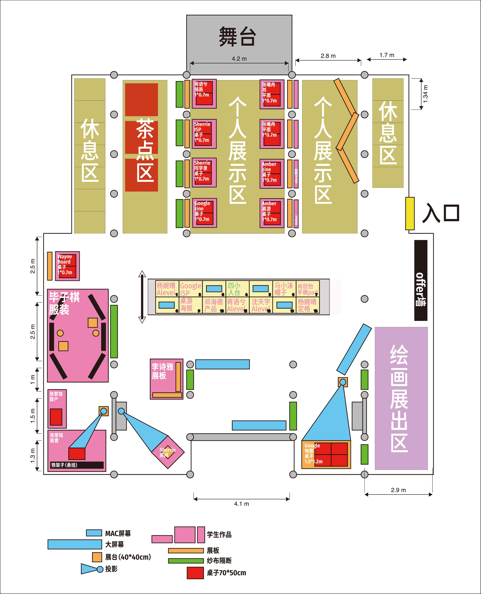
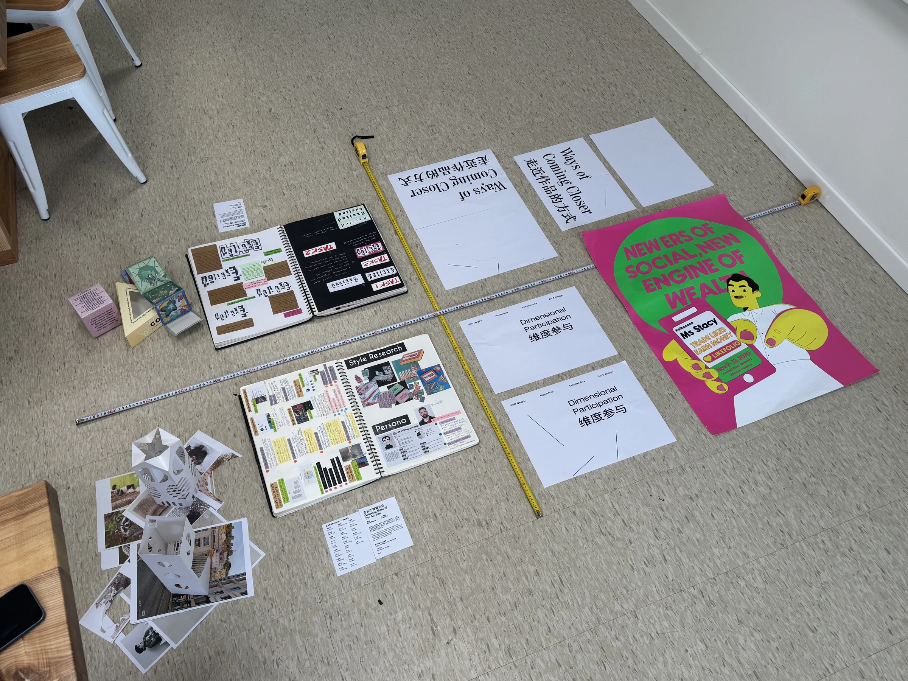
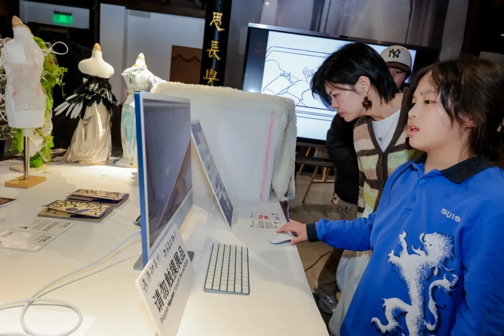

Ways of Coming Closer / 走近作品的方式
在一座约 100㎡ 的校园百年古宅里，用一周时间重构 70 余名高中生的跨媒介艺术展——把“请勿触摸”的静态陈列，转化为观众可翻阅、可试玩的参与式现场。
《Ways of Coming Closer / 走近作品的方式》是驻上海青浦区协和双语学校高中部期间落地的跨媒介艺术与设计主题展。面对来自 9–12 年级 70 余名学生的 50 余件作品——涵盖平面出版、服装装置、综合材料、摄影以及代码生成与可玩小游戏——以及仅有约 100㎡、木构柱网密集且无法钉墙的校园古宅空间，我和团队只有一周的极限筹备周期。比起把传统白盒子画廊的规训生搬进校园，我将策展核心落在了“距离感”上：不把学生作品供奉在只可远观的台座上，而是通过空间尺度控制、过程草图并置与可上手操作的互动展台，为观众设计出观看、翻阅、试玩等不同的“走近方式”。

空间约束与 1:1 网格推演
百年古宅的传统木构格局既带来了独特的空间气质，也意味着极窄的通行裕度与严苛的展陈限制。在无法提前进场反复试错的条件下，我先绘制了详尽的场地平面图划分出展区与人流主轴，并在布展前直接利用教室地板，以卷尺按 1:1 比例拉出 1 米基准网格。通过把实物体量与每件作品配套的 sketchbook 提前摆进网格模拟，我们在进场前就锁定了展品密度、视线落点与双人错身距离，避免现场布展陷入临时拼凑。




古宅里的动线组织与媒介分区
50 余件作品横跨纸面、织物、立面装置与屏幕互动，若按年级或班级机械分区，极易造成视觉拥堵与节奏断裂。我依据古宅原本的进深与采光条件，将展陈按媒介尺度与观看距离重新编排：利用木构展架与既有立柱形成半开放的视觉屏障，把需要静观的平面与织物作品引入相对沉静的侧廊与展架区，同时把人流自然牵引向中庭核心，让传统建筑的结构本身成为展厅叙事的分隔节奏。


降低距离感：从“请勿触摸”到参与式互动现场
针对代码艺术与互动游戏类作品最容易沦为“没人敢碰的演示屏”的问题，我将古宅中庭最醒目的长桌铺上白布，搭起双侧开放式互动区，把运行中的可玩程序、底层代码、过程展板与手写操作提示并置在同一桌面。布展收尾时，我们在展台旁刻意划掉了常规展览里的“请勿触摸”警示，改写为鼓励观众上手试玩与翻看创作笔记的引导语——当规训被撤掉，观众停留的时间明显拉长，也更自然地从作品成品顺着过程稿读进创作者的思考。



多元并置的视觉系统：9 版系列海报
为了让展览视觉既统一又有足够的包容度，我没有用单一主图代表 70 余位创作者，而是建立了同一套中英文字体网格骨架，从中抽取 9 件不同媒介、不同色调的学生作品局部，生成 9 版并行发布的系列海报。单独张贴时，每张海报都指向一种具体的创作切片；并置排开时，整组视觉则像展览的微缩目录，提前向观众传递“多元媒介共存”的策展基调。

项目总结
《Ways of Coming Closer》是一次在极短周期与强空间约束下完成的策展实战。从教室地板上的 1 米卷尺模拟，到展台上被划掉的“请勿触摸”，整场展览反复验证着同一个判断：策展设计不只是把东西整齐摆进房间，而是通过尺度、动线与互动权限的每一次取舍，决定观众是以“旁观者”还是“参与者”的身份进入内容。